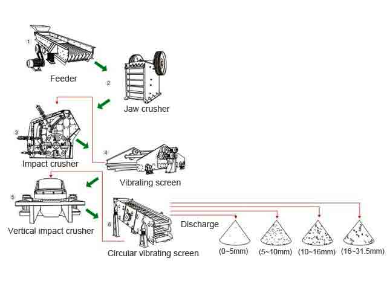

Artificial Sand Making Plant

Nowadays artificial sand is widely used in highway construction, concrete making, and relevant construction fields. Due to the gradual shortage of natural sand resources and the booming construction industry, machine-made artificial sand becomes even more popular in the market . Various types of rocks can be processed into sand including granite, natural river pebbles, basalt, limestone and so on.The Artificial sand making plant produced by our company can provide you with all-around technical support. The whole line consists of vibrating feeder, jaw crusher, Vertical Shaft Impact Crusher, vibrating screen and belt conveyor. According to specific requirements, we can combine different models together to meet various needs
Working Principle of Artificial sand making plant
Mobile crusher is a kind of stone crusher series and also the most common crusher in the stone crusher series .Mobile Crusher is adaptable to all mobile crushing needs, Mobile Crusher set up a new range of business opportunities for contractors, quarry operators, recycling and mining applications.The mobile crusher plant for stone crushing features low transportation cost, flexible configuration, easy maintenance and etc. The mobile crusher plant can not only work independently, but also be combined with other machines in a production line. There are mainly several kinds of mobile crusher plant,that is jaw mobile crusher plant,cone mobile crusher plant and impact mobile crusher plant.
Process of Artificial Sand Making
The raw material is fed regularly by the vibrating feeder to the primary jaw and secondary jaw/cone crusher for crushing. The crushed material is then transported by belt conveyor to the following vibrating screen for separation. Proper sizes (usually there would be an upper limit for different model of sand making machinery) would be transported to the sand making machine directly, while unrequired materias will be returned to the secondary jaw/cone crusher for repeated crushing until getting required sizes. The crushed material from the sand making machine will be transported to/ returned to the vibrating screen for final separation. Required sand size product would be returned to the sand washing machine for clearance, and then retained as final product. Unrequested product will be returned to the sand making machine for repeated crushing until getting all required size. We can provide professional solutions to different capacity requirement.